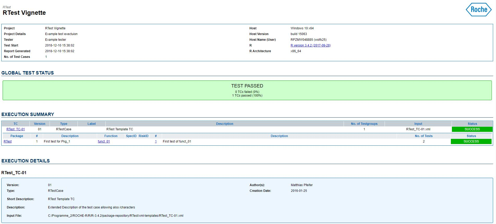

For the first test we would like to test a really simple example. We want to test a function that binds the sum of each row to a data frame as an additional column called sum and multiplies it with an additional parameter mult. The function shall be called test_fun.
## Define the functions to be tested
test_fun <- function(dat, mult) { cbind(dat, "sum" = apply(dat, 1, sum)*mult) }
# assign global to work inside vignette
assign("test_fun", test_fun, envir = .GlobalEnv)We want to create a test case that goes through and one that failes to show the RTest functionality.
First an empty test case in RTest contains a synopsis and input-data:
<?xml version="1.0" encoding="UTF-8"?>
<RTestCase
xmlns:xsi="http://www.w3.org/2001/XMLSchema-instance"
xsi:noNamespaceSchemaLocation="../xsd/RTest.xsd">
<ID>RTest_TC-01</ID>
<synopsis>
<version>01</version>
<author>Matthias Pfeifer</author>
<short-description>RTest Template TC</short-description>
<description>
<![CDATA[
Extended Description of the test case allowing also <some><special>/characters
]]>
</description>
<creation-date>2016-01-25</creation-date>
<change-history>
<change author="Matthias Pfeifer" date="2016-01-25">Initial Version</change>
</change-history>
</synopsis>
<input-data>
<data.frame name="test01">
<col-defs>
<coldef name="x" type="numeric" />
<coldef name="y" type="numeric" />
</col-defs>
<row>
<cell>1</cell>
<cell>2</cell>
</row>
<row>
<cell>1</cell>
<cell>2</cell>
</row>
</data.frame>
</input-data>
<tests>
...
</tests>
</RTestCase>
As you can see, the XML file that we’ll create links to the RTest.xsd. This allows to pre-write certain parts of the document and define structures, like “What does a data.frame look like?”. To visualize XML and XSD we highly recommend using Altova XML Spy. The input data output we created here can be generated using:
my_data <- data.frame(x=c(1,2),y=c(1,2))
RTest::xmlWriteData_data.frame("data.frame",my_data,"test01")## <data.frame name="test01">
## <col-defs>
## <coldef name="x" type="numeric" />
## <coldef name="y" type="numeric" />
## </col-defs>
## <row name="1">
## <cell>1</cell>
## <cell>1</cell>
## </row>
## <row name="2">
## <cell>2</cell>
## <cell>2</cell>
## </row>
## </data.frame>The next step is to define a test case. As RTest is made for testing packages each test case has to start with a package name node, e.g. RTest. Then you have to define a function to call, e.g. funct_01. These two nodes have to follow like this:
<tests>
<RTest>
<funct_01 test-desc="First test of funct_01">
</...Afterwards we have to define what we want to test in each function. Therefore we need to define input paramters
<params>
<mult value = "1" type="numeric" />
</params>in our case just the value of mult and the reference values.
<reference>
<col-defs>
<coldef name="x" type="numeric" />
<coldef name="y" type="numeric" />
<coldef name="sum" type="numeric" />
</col-defs>
<row>
<cell>1</cell>
<cell>2</cell>
<cell>3</cell>
</row>
<row>
<cell>1</cell>
<cell>2</cell>
<cell>3</cell>
</row>
</reference>Additionally we’ll have to tell how the function shall be executed (silently, warning, …). The test case for a working test looks like this:
<funct_01 test-desc="First test of funct_01">
<params>
<mult value = "1" type="numeric" />
</params>
<reference>
<col-defs>
<coldef name="x" type="numeric" />
<coldef name="y" type="numeric" />
<coldef name="sum" type="numeric" />
</col-defs>
<row>
<cell>1</cell>
<cell>2</cell>
<cell>3</cell>
</row>
<row>
<cell>1</cell>
<cell>2</cell>
<cell>3</cell>
</row>
</reference>
<testspec>
<execution execution-type="silent" />
<return-value compare-type="equal" diff-type="absolute" tolerance="0.001" />
</testspec>
</funct_01>You see that mult is set to “1” and we basically add up the values rowwise.
For a non-working test we can use:
<funct_01 test-desc="see test_fun fail">
<params>
<mult value = "1" type="numeric" />
</params>
<reference>
<col-defs>
<coldef name="x" type="numeric" />
<coldef name="y" type="numeric" />
<coldef name="sum" type="numeric" />
</col-defs>
<row>
<cell>1</cell>
<cell>2</cell>
<cell>5</cell>
</row>
<row>
<cell>1</cell>
<cell>2</cell>
<cell>3</cell>
</row>
</reference>
<testspec>
<execution execution-type="silent" />
<return-value compare-type="equal" diff-type="absolute" tolerance="0.001" />
</testspec>
</funct_01>this test shall fail as <cell>5</cell> is not the sum of 1 and 2. We are ready with the XML file. You can also get this file by using paste0(find.package("RTest"),"/xml-templates")
The test adapter is an R-script that tells RTest how to interpret the XML file. The test adapter shall now use params, reference and test-spec to test the outcome of the function test_fun. Therefore we need to
Part 1 is fairly simple. For Part2 you need to know some of the RTest functionalities. Please see the following code for an example:
## Loading required package: testthat## Loading required package: magick## Linking to ImageMagick 6.9.10.23
## Enabled features: fontconfig, freetype, fftw, lcms, pango, webp, x11
## Disabled features: cairo, ghostscript, rsvg## Loading required package: XML##
## Attaching package: 'RTest'## The following object is masked _by_ '.GlobalEnv':
##
## test_fun# Create test adapter
setClass(
Class = "TestPackageTestCase",
representation = representation(),
prototype = list(),
contains = "RTestCase",
where = .GlobalEnv
)
TestPackageTestCase <- function(xmlpath){
RTestCase(xml.fPath=xmlpath)
}
RTest::setTestMethod(
"test.Pkg_1.funct_01",
signature = "TestPackageTestCase",
definition = function(object, inputData, execCache, xmlDef, ...) {
# Read parameters
mult <- RTest::xmlReadData_variable(xmlDef[["params"]][["mult"]])
# Calculate result
result <- RTest::test_execution(
what = test_fun,
args = list(c(inputData[[1]], mult)),
xmlTestSpec = xmlDef[["testspec"]][["execution"]])
# Read reference
reference <- RTest::xmlReadData_data.frame(xmlDef[["reference"]])
# Execute test
if(!is.null(xmlDef[["testspec"]][["return-value"]]))
RTest::test_returnValue_data.frame_cellbycell(
result,
reference,
xmlDef[["testspec"]][["return-value"]]
)
# Return result (will be cached)
return(result)
},
where = .GlobalEnv
)As you can see we use xmlReadData_variable to read the xml value of mult. Instead of do.call in RTest we use the wrapper function test_execution that not only runs code, but also checks, if it runs as expected. You can see that each of our test-methods gets the parameter inputData as an input. inputData is a list of all values inside the input-data section of the XML file. The first value inside our XML file was a data.frame, so we use inputData[[1]] to derive its values and hand it over to test_fun.
The reference can be compared using test_returnValue_data.frame_cellbycell which is the RTest wrapper for expact_equal for data.frames. All our compare functions start with the name test_returnValue_ and you can find them by this.
In future we plan on enabling test-cases without test-adapters.
We can now create a test collection from the folder where we stored the XML test files. In our case we use the basic example that we provide to you inside the package.
# Create test collection
testCollection <- new("RTestCollection",
project.name = "RTest Vignette",
project.details = "Example test exectuion",
tester = "Example tester",
test.start = format(Sys.time(), "%Y-%m-%d %H:%M:%S"))
# Import TCs
TCDir <- paste0(find.package("RTest"),"/xml-templates")
testCollection <- importTCsFromDir(testCollection,
xml.dPath = TCDir,f.pattern="RTest_TC-01.xml")We will then run our test-collection and a lovely Report will be produced.
outf <- tempfile(fileext=".html")
# Execute test cases
testCollection <- exec(testCollection, out.fPath = outf, open=FALSE)
DONE!
For any questions refer to the package maintainer.